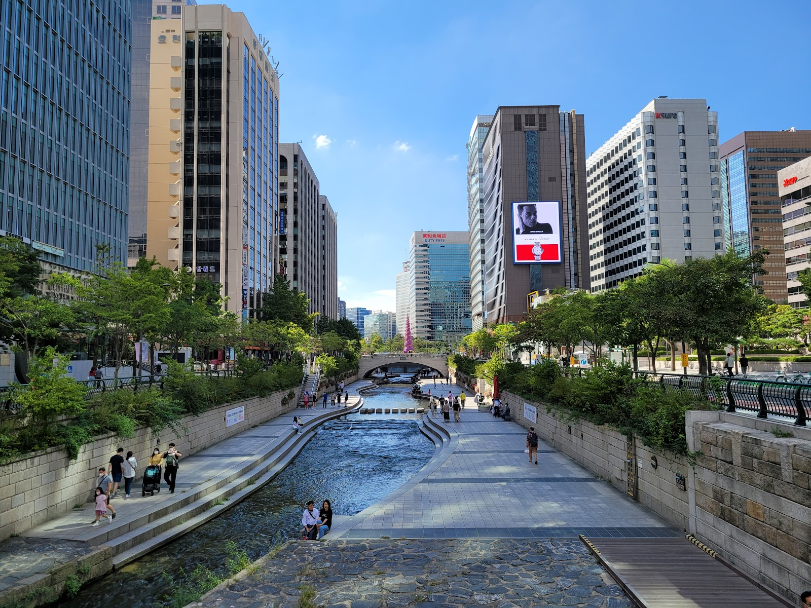

Cheonggyecheon: A Riverside Walk Through the Heart of Seoul
At a glance: Cheonggyecheon is a long urban stream and walking corridor running through central Seoul. It’s an easy way to take a break from busy streets, see the city from a different angle, and link a riverside stroll with nearby neighborhoods. The Google listing provided for this guide is rated 4.6 out of 5, based on 11,130 reviews.
Location: Central Seoul; the listed address is in Jongno District.
Best for: A flexible city walk, a quiet pause between sightseeing stops, or an outdoor stroll after exploring downtown.
What to expect
Cheonggyecheon (청계천) is a streamside public space in the middle of Seoul’s downtown. From street level, the area can feel crowded and fast-moving; down beside the water, traffic and office buildings become part of a different scene. Walking paths follow the stream beneath bridges and alongside planted banks, with places to pause and watch the water or the changing city around you.
This is not a single attraction with one entrance or a set visit time. The stream stretches through central Seoul, so you can walk a short section or make it part of a longer route. That flexibility makes it useful between major sights: you can step down for a breather, stroll for as long as you like, and return to the streets when you’re ready. The views vary along the way, from busy commercial blocks to quieter stretches, so even a short walk can feel like a change of pace.
Cheonggyecheon is also a public space used by Seoul residents, not just a sightseeing stop. On a pleasant day, expect people walking, sitting, and taking photos. It can be especially appealing if you want to experience a more everyday side of the city without planning a full-day excursion.
How to plan your visit
Choose your starting point according to what else you want to see, rather than feeling you need to walk the entire stream. Cheonggye Plaza is a recognizable place to begin in the downtown area, while other access points let you join the path farther along. Check your map before heading down: the stream’s route passes through several neighborhoods, and the nearest entrance may not be the one closest to your destination at street level.
A simple plan is to walk one section, then continue your day in the surrounding downtown streets. The wider area is convenient for combining the stream with other city sightseeing, but allow time to find the right way back up to street level. Bridges and road crossings can make the route feel more segmented than a park loop. If you have limited time, a short out-and-back walk is an easy option; if you have more, continue until you reach a neighborhood you want to explore.
Wear comfortable shoes with a stable sole. The streamside path is a walking route, and the surface may feel damp or uneven in places. If you’re visiting with a stroller, wheelchair, or someone who has difficulty with stairs, check the access route in advance: access conditions can vary from one entrance to another. Don’t assume every stairway has a nearby ramp or that every section offers the same facilities.
When to go and what to bring
Cheonggyecheon works well as a daytime walk, but it can also offer a calmer perspective on downtown later in the day. Conditions change with the weather and season, so dress for the forecast and bring water in warm weather. After rain, take extra care on wet surfaces. In heavy rain or when water levels are high, stay out of the stream and follow any posted safety directions. Keep children close to the path and don’t climb down the banks or enter the water.
There’s no need to arrive with a tightly scheduled itinerary. Leave room to stop for photos, take a break, or turn back when you’ve had enough. If you’re visiting during a busy period, expect more people on popular sections and near well-known access points. Be considerate of local walkers: keep pathways clear and take care when stopping for pictures.
Good to know
- It’s a linear route: Decide where you want to join and leave, and check the map before setting off. You don’t have to walk the whole stream.
- Access varies: Look for an entrance suited to your mobility needs, and verify conditions for your chosen section before you go.
- Watch the weather: Wet surfaces can be slippery, and heavy rain can make a streamside visit unsafe. Follow local signs and instructions.
- Plan around your own pace: A brief riverside break can be worthwhile, even if you have only a small gap between other activities.
- Check official information: Use the official site for current notices and visitor guidance, especially if weather or local conditions may affect your plans.
Useful links
FAQ
How long should I allow for a visit?
It depends on how much of the stream you want to explore. A short section works as a quick break during a downtown day; a longer walk takes more time. Pick a start and end point that fit your plans rather than assuming you need to cover the whole route.
Is Cheonggyecheon suitable for visitors with limited mobility?
Some access points may be more suitable than others, and conditions can vary along the route. Check the official site and your map for the specific section you plan to visit, and confirm whether the entrance works for your needs.
Is it safe to visit when it rains?
Use caution on wet paths, and avoid entering the stream during heavy rain or high water. Follow posted warnings and local instructions; if conditions look unsafe, choose another downtown activity.